컴퓨터응용가공산업기사 (2006-05-14 기출문제)
1과목: 기계가공법 및 안전관리
1. 3침법이란 나사의 무엇을 측정하는 방법인가?
- 골지름
- 피치
- 유효지름
- 바깥지름
(정답률: 75%)

2. 불수용성 절삭유 중 점성이 낮고 윤활 작용이 좋은 반면 냉각 작용은 좋지 못하여 주로 경절삭에 쓰이는 것은?
- 광물섬유
- 천연섬유
- 혼합유
- 극압유
(정답률: 56%)
3. 바이트의 끝 모양과 이송이 표면 거칠기에 미치는 영향 중 다듬질 표면 거칠기의 이론 값(Hmax)을 구하는 공식은? (단, r=바이트 끝 반지름, S=이송거리 이다.)
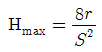
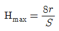
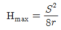
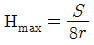
(정답률: 56%)
4. 밀링머신에 사용되는 부속장치가 아닌 것은?
- 아버
- 분할대
- 면판
- 슬로팅장치
(정답률: 67%)
5. 최소 눈금이 0.01mm인 마이크로 미터에서 스핀들의 피치가 0.5mm이면 딤블을 몇 등분한 것인가?
- 10등분
- 50등분
- 100등분
- 200등분
(정답률: 87%)
6. 방화(防火)조치로서 부적당한 것은?
- 흡연은 정해진 곳에서 한다.
- 유류취급 장소에서는 방화수를 준비한다.
- 화기는 정해진 곳에서 취급한다.
- 기름 걸레 등은 정해진 용기에 보관한다.
(정답률: 68%)
7. 다음 그림은 더브테일 홈 측정의 일부를 나타내고 있다. ℓ의 값은? (단, 측정판의 지름은 8mm, 홈의 각은 60°이다.)
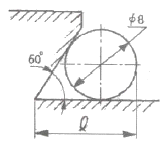
- 8.832mm
- 10.928mm
- 12.619mm
- 14.013mm
(정답률: 48%)
8. 전기 도금과는 반대로 하여, 그릴의 홈, 주사침, 반사경 및 시계의 기어 등을 다듬질하는 데 응용되고 있는 가공법은?
- 레이저 가공
- 방전 가공
- 숏 피닝
- 전해 연마
(정답률: 59%)
9. 인벌류우트곡선을 그리는 원리를 응용한 이의 절삭방법을 무엇이라고 하는가?
- 창성법
- 총형 커터에 의한 방법
- 형판에 의한 방법
- 래크 커터에의한 방법
(정답률: 43%)
10. 표면연삭기에서 숫돌의 원주속도 V=2400m/min이고, 연삭력 P=15kgf이다. 이 때 연삭기에 공급된 동력이 10PS이라면 이 연삭기의 효율은 몇 %인가?
- 70%
- 75%
- 80%
- 125%
(정답률: 48%)
11. 액체 호우닝에서 표면을 두드려 압축함으로써 재료의 피로 한도를 높이는 것은?
- 저온응력 완화법
- 피닝효과
- 기계적응력 완화법
- 치수효과
(정답률: 62%)
12. 나사 연삭을 하기 위해서 숫돌을 나사형으로 만드는 작업을 무엇이라고 하는가?
- 트루잉(truing)
- 프레싱(pressing)
- 글레이징(glazing)
- 로딩(loading)
(정답률: 48%)
13. 베드를 가능한 짧게 하여 주로 공작물의 단면절삭에 쓰이는 것으로 길이가 짧고 직경이 큰 공작물의 절삭에 사용하는 선반은?
- 수직 선반
- 터릿 선반
- 정면 선반
- 모방 선반
(정답률: 65%)
14. 해머작업 안전수칙 중 틀린 것은?
- 녹이슨 재료를 작업할 때는 보안경을 착용한다.
- 장갑을 끼고 작업하지 않는다.
- 처음부터 큰 힘을 주어 작업한다.
- 자루가 불안정한 것은 사용하지 않는다.
(정답률: 82%)
15. 브로우칭(broaching) 머신의 크기를 나타내는 것으로 옳은 것은?
- 최대인장력과 브로우치의 최대폭
- 최대인장력과 브로우치의 최대행정길이
- 최소인장력과 브로우치의 최대폭
- 최소인장력과 브로우치의 최대행정길이
(정답률: 67%)
16. 선반의 척(chuck)에 해당 되지 않는 것은?
- 헬리컬 척
- 콜릿 척
- 마그네틱 척
- 연동 척
(정답률: 60%)
17. 절삭속도 31.4m/min인 8날 짜리 ø20 엔드밀로 소재를 가공할 때 이송속도는? (단, 밀링커터의 날 1개 마다의 이송 fz=0.⑤mm이다.)
- 251.2mm/min
- 25.12mm/min
- 20mm/min
- 200mm/min
(정답률: 46%)
18. 드릴 작업시 안전 사항으로 틀린 것은?
- 작업복을 입고 작업한다.
- 작은 일감은 손으로 꽉 붙잡고 작업한다.
- 일감은 정확히 고정한다.
- 장갑을 사용하지 말아야 한다.
(정답률: 90%)
19. KS규격 안전색에서 빨강의 표시사항이 아닌 것은?
- 정지
- 고도 위험
- 방화
- 위험
(정답률: 35%)
20. 프로그램 주소(address)에 대한 기능 설명으로 틀린 것은?
- G – 준비기능
- M – 보조기능
- S – 이송기능
- T – 공구기능
(정답률: 74%)
2과목: 기계설계 및 기계재료
21. 담금질한 강재의 잔류 Austenite를 제거하여 치수변화를 방지하는 열처리법은?
- 저온뜨임
- 구상화 처리
- 심냉처리
- 주화처리
(정답률: 44%)
22. 특수강에 함유되는 원소 중 내식, 내마모성을 증가시키는 원소는?
- Ni
- Mo
- Si
- Cr
(정답률: 40%)
23. 금속을 냉간 가공할 때 가공도가 증가함에 따라 그 성질은 어떻게 변하는가?
- 인성증가
- 내부응력감소
- 연신율증가
- 경도증가
(정답률: 52%)
24. 순철의 물리적 성질 중 비중은 얼마 정도인가?
- 7.87
- 6.65
- 5.58
- 4.78
(정답률: 60%)
25. 고속도강이 갖추어야 할 성질 중에서 가장 중요한 것은?
- 고온경도
- 충격치
- 인장강도
- 인성
(정답률: 53%)
26. 다음 중 세라믹 공구의 주성분은 어느 것인가?
- Cr2O3
- Al2O3
- MnO2
- Cu3O
(정답률: 76%)
27. 킬드강(Killed steel)이란?
- 탈산하지 않은 강
- 완전히 탈산한 강
- 중간정도 탈산한 강
- 뚜껑(cap)을 씌운강
(정답률: 71%)
28. 주철 조직에서 나타나는 흑연의 형상이 아닌 것은?
- 공정상
- 편상
- 구상
- 목화상
(정답률: 66%)
29. 진동에너지를 흡수하는 능력이 우수하여 공작기계의 베드, 기어 덮개 또는 피아노 프레임으로 가장 적합한 재료는?
- 가단주철
- 회주철
- 18-8 스테인레스강
- 저탄소강
(정답률: 30%)
30. 주철의 성장을 억제하기 위하여 사용되는 첨가원소로 가장 적합한 것은?
- Al + S
- Si + C
- Cr + Ni
- Co + V
(정답률: 45%)
31. 끝 저널에 가해지는 베어링 하중을 P, 저널길이를 l, 저널의 지름을 d라고 할 때, 베어링 압력 p를 구하는 식은?
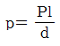
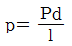
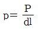
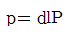
(정답률: 36%)
32. 베어링과 접촉하는 축 부분을 무엇이라 하는가?
- 리테이너
- 전동체
- 저널
- 롤러
(정답률: 59%)
33. 역류(逆類)를 방지하여 유체를 한쪽 방향으로만 흘러가게 하는 밸브는?
- 플랩 밸브
- 리프트 밸브
- 체크 밸브
- 슬라이딩 밸브
(정답률: 86%)
34. 두 축의 중심선이 어느 각도로 교차 되고, 그 사이의 각도가 운전 중 다소 변하여도 자유로이 운동을 전달 할 수 있는 축 이음(shaft coupling)으로 맞는 것은?
- 고정 이음
- 플랙시블 이음
- 올덤 이음
- 유니버셜 이음
(정답률: 32%)
35. 너트의 풀림 방비법에 해당 되지 않는 것은?
- 로크 너트(lock nut)를 사용
- 가스켓(gasket)을 사용
- 와셔(washer)를 사용
- 분활 핀(split pin)을 사용
(정답률: 56%)
36. 스퍼 기어의 모듈이 5일 때 원주 피치(mm)는?
- 7.81
- 15.71
- 20.71
- 31.41
(정답률: 59%)
37. 축의 원주에 여러 개의 키를 가공한 것으로 큰 토크를 전달할 수 있고 내구력이 크며 축과 보스와의 중심축을 정확하게 맞출 수 있는 것은?
- 스플라인
- 미끄럼 키
- 성크 키
- 반달 키
(정답률: 69%)
38. 3000kgf-cm의 비틀림 모우멘트가 작용하는 지름이 3cm인 축의 최대 비틀림 응력(kgf/cm2)은 약 얼마인가?
- 566
- 656
- 696
- 550
(정답률: 24%)
39. 다음 그림과 같은 스프링장치에서 각 스프링의 상수(常數) K1=4kgf/cm, K2=5kgf/cm, K3=6kgf/cm이며, 하중방향의 처짐이 =150mm일 때 하중 P는 약 얼마인가?
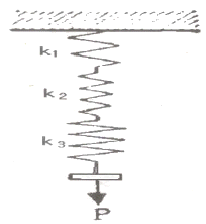
- P = 314kgf
- P = 243kgf
- P = 31.4kgf
- P = 24.3kgf
(정답률: 25%)
40. 두 줄 나사를 두 바퀴 돌렸더니 축 방향으로 12mm이동했다. 이 나사의 피치(p)와 리드(ℓ)는 각각 얼마인가?
- p = 3mm, ℓ = 6mm
- p = 6mm, ℓ = 3mm
- p = 3mm, ℓ = 3mm
- p = 6mm, ℓ = 6mm
(정답률: 57%)
3과목: 컴퓨터응용가공
41. 베지어(Bezier) 곡선의 특징을 기술한 것 중 틀린 것은?
- 첫 조정점과 마지막 조정점(control point)을 지나도록 한다.
- 중간에 있는 조정점들은 곡선의 진행경로를 결정한다.
- 1개의 조정점 변화는 곡선 전체에 영향을 미친다.
- n개의 조정점에 의해서 정의되는 곡선은 (n+1)차이다.
(정답률: 64%)
42. 간단한 형태의 솔리드 들을 이용하여 복합연산(boolean operation)으로 새로운 솔리드를 생성시키는 모델링 방법은 무엇인가?
- surface modeling 방법
- CSG 방법
- 오일러 방법
- sweep 방법
(정답률: 55%)
43. CSG(Constructive Solid Geometry)를 이용하여 3차원 솔리드를 표현하기 위하여는 이진 트리(binary tree)를 이요하는데 이진 트리의 종 노드(leaf node)에 놓일 수 없는 것은?
- 집합 연산자(set operator)
- 기본 형상(primitive)
- 이동변환 행렬(translation matrix)
- 회전변환 행렬(rotation matrix)
(정답률: 48%)
44. 평면상에서 기준 직교축의 원점에서부터 점 P까지의 직선 거리(r)와 기준 직교축과 그 직선이 이루는 각도(θ)로 표시되는 좌표계를 무엇이라고 하는가?
- 원주 좌표계
- 극 좌표계
- 직교 좌표계
- 구 좌표계
(정답률: 40%)
45. CAD/CAM 시스템용 입력장치가 아닌 것은?
- 라이트펜(light pen)
- 플로터(plotter0
- 마우스9mouse)
- 태블릿(tablet)
(정답률: 78%)
46. 다음의 그래픽 출력장치 중 출력되는 데이터의 구조가 다른 것과 명백히 구분되는 장치는?
- 레이저 프린터(Laser Printer)
- 정전 플로터(Electro Static Plotter)
- 펜 플로터(Pen Plotter)
- 하드카피 유니트(Hardcopy unit)
(정답률: 44%)
47. 컬러 디스플레이의 기본 색상이 아닌 것은?
- Blue
- Green
- Red
- Yellow
(정답률: 55%)
48. 다음 식에 의해서 표혈될 수 없는 형상은? f(x,y)=ax2+bxy+cy2+dx+ey+g=0 (여기서 a, b, c, d, e, g는 상수이다.)
- 사각형(rectangular)
- 원(circle)
- 타원(ellipse)
- 포물선(parabola)
(정답률: 45%)
49. 다음 중 근사기법을 이용하는 곡선 표현 방법은?
- B-스플라인
- 3차 스플라인
- 라그란지(Lagrange) 다항식
- 헤르밋(Hermite)
(정답률: 56%)
50. CAD/CAM 시스템을 이용한 자동프로그래밍의 장점을 설명한 것 중 틀린 것은?
- NC테이프 및 데이터를 작성하는데 필요한 시간과 노력이 절감된다.
- 인간의 능력으로 연산 불가능한 형상의 프로그램도 쉽게 처리 할 수 있다.
- NC 데이터의 오류를 확인하기가 어려워 신뢰성이 높지 않다.
- NC 데이터작성에 관련된 여러 가지 계산을 동시에 할 수 있다.
(정답률: 73%)
51. 기하학적 형상 모델링에서 B-splinge 곡선의 성질 중 곡선상에 있는 몇 개의 점을 알고 있을 때 그에 따른 B-spline곡선의 꼭지점을 쉽게 알 수 있는데 이를 무엇이라 하는가?
- 연속성
- 역변환
- 지역유일성
- 형상직관
(정답률: 16%)
52. 시리얼 테이터(serial data)의 구성요소에 해당하지 않는 것은?
- 스타트 비트(start bit)
- 크리에이트 비트9create bit)
- 스톱 비트(stop bit)
- 데이터 비트(data bit)
(정답률: 52%)
53. 다음은 좌표값이 (3, 2.5)인 점을 동차 좌표(homogeneous coordinate)로 표현한 것이다. 이 중에서 점의 좌표가 다른 것 하나를 고르면?
- (6, 5, 2)
- (1.5, 1.25, 0.5)
- (9, 7.2, 3)
- (12, 10, 4)
(정답률: 42%)
54. 임의의 3차원 입체형상을 그보다 작은 정육면체 등과 같이 기본적인 입체요소의 집합으로 잘게 분할, 근사한 형상으로 대체하여 표현하는 기법은?
- CSG 모델링
- B-Rep 모델링
- Decomposition 모델링
- Sweeping 모델링
(정답률: 18%)
55. 다음 CAD상에서 기본 도형 처리 방법에 대한 설명 중 틀린 것은?
- 직선의 정의는 2점을 지정하는 방법과 한 점으로부터 거리와 각도를 지정하는 방법 등이 있다.
- 원호의 정의는 임의의 3점을 지나는 원호, 시작점, 중심점, 끝점에 의한 원호 등이 있다.
- 원의 경우는 중심과 반경을 지정하는 방법이 있다.
- 점의 정의에서 존재하는 요소의 끝점, 중앙점 및 중심점은 사용되지 않는다.
(정답률: 68%)
56. 래스터 주사 디스플레이의 경우 직선이 계단형(stair-stepped)으로 보이는 현상을 나타내는 용어는?
- 애일리애싱(aliasing) 효과
- 랩어라운드(wrap-around) 효과
- 커리그래픽(calligraphic) 효과
- 래스터(raster) 효과
(정답률: 23%)
57. 자유곡면의 CNC가공을 위하여 고려하여야 할 것이 아닌 것은?
- 공구간섭 방지
- 황삭계획 및 허용공차 지정
- 가공경로 계획
- 자재 수급 계획
(정답률: 79%)
58. 와이어 모델링(wire modelling)의 특징과 관계가 적은 것은?
- 3면 투시도의 작성이 불가능하다.
- 숨은선(은선) 제거가 불가능하다.
- 단면도 작성이 불가능하다.
- 모델의 생성이 용이하다.
(정답률: 35%)
59. 2차원에서 주어진 물체를 y=x의 식을 갖는 직선에 대하여 반사변화(reflection)을 수행하는데 적용되는 변환행렬[Tref]는?
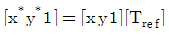
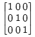
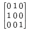
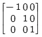
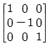
(정답률: 23%)
60. 화면에 그려진 솔리드 모델의 음영효과(shading)를 결정하는 주된 요소는?
- 모델의 크기
- 평행광선의 경우, 모델과 조명과의 거리
- 화면의 배경 색
- 모델의 표면을 구성하는 면의 수직 벡터
(정답률: 47%)
4과목: 기계제도 및 CNC공작법
61. 다음은 제3각법에 대한 설명이다. 틀린 것은?
- 눈→투상→물체의 순으로 나타난다.
- 좌측면도는 정면도의 좌측에 그린다.
- 저면도는 우측면도의 위에 그린다.
- 평면도는 정면도의 위에 그린다.
(정답률: 77%)
62. 래핑 다듬질 면에 가공에 의한 커터의 줄 무늬가 여러 방향으로 교차 또는 무 방향일 때 줄무늬 방향 기호는?
- R
- C
- X
- M
(정답률: 71%)
63. 다음 중 가상선을 사용하는 경우가 아닌 것은?
- 물품의 일부를 파단한 곳을 표시하는 선
- 인접부분을 참고로 표시하는 선
- 도시된 물체의 앞면을 표시하는 선
- 이동하는 부분의 이동 위치를 표시하는 선
(정답률: 36%)
64. 기계 구조용 탄소 강재의 KS 재료 기호는?
- SS 41
- SCr 410
- SM 40C
- SCS 55
(정답률: 82%)
65. 기하공차 도시방법에서 최대실체공차를 적용하는 공차값 뒤에 기입하는 기호는?
(정답률: 52%)
66. 보기와 같은 입체도의 제3각 투상도로 가장 적합한 것은?
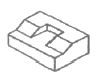
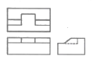
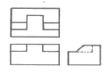
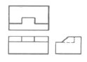
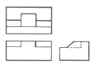
(정답률: 79%)
67. 보기 입체도에서 화살표 방향이 정면일 경우 평면도로 가장 적합한 것은?
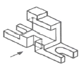
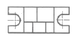
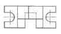
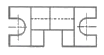
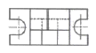
(정답률: 42%)
68. 관용 테이퍼 암나사를 나타내는 나사기호는?
- R
- RC
- RP
- RF
(정답률: 43%)
69. 도면에서 두 종류 이상의 선이 같은 장소에서 겹치게 될 경우 선의 우선 순위가 높은 것부터 순서대로 되어있는 것은?
- 외형선 → 숨은선 → 절단선 → 중심선
- 외형선 → 절단선 → 숨은선 → 중심선
- 외형선 → 중심선 → 숨은선 → 절단선
- 절단선 → 중심선 → 숨은선 → 외형선
(정답률: 72%)
70. 경사면에 평행한 투상면을 설치하고 이것에 필요한 부분을 투상하면 물체의 실제 모양이 나타내는 투상법은?
- 경투상도
- 등각투상도
- 사투상도
- 보조투상도
(정답률: 56%)
71. 인서트 바이트에서 다음 4번의 “M”이 나타내는 내용은? (단, ISO인서트 규격)
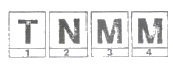
- 인선반경 구분
- 인서트 형상
- 여유각
- 절삭날 길이
(정답률: 41%)
72. CNC선반의 지령 중 어드레스 F의 단위가 다른 것은?
- G32_ F _ ;
- G76_ F _ ;
- G92_ F _ ;
- G98_ F _ ;
(정답률: 37%)
73. 그림과 같이 서보 모터의 축 또는 볼스크루의 회전 각도로 위치를 검출하여 피드백(Feed back)을 하는 CNC 공작기계의 제어 방식은?
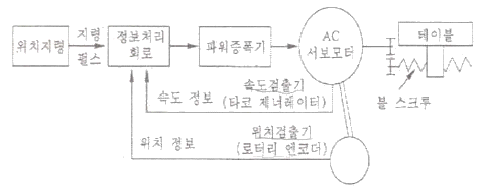
- 개방회로 방식(Open loop system)
- 반폐쇄회로 방식(Semi-closed loop system)
- 폐쇄회로 방식(Closed loop system)
- 하이브리드회로 방식(Hybrid servo system)
(정답률: 73%)
74. 머시닝센터 준비기능 중 연속유효 지령(modal G code)이 아닌 것은?
- G01
- G03
- G00
- G04
(정답률: 55%)
75. 다음 ㉠에서 ㉡까지의 원호보간 프로그램으로 틀린 것은?
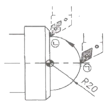
- G03 X40, Z0, R20, F0.25 ;
- G03 X40, Z0, K-20, F0.25 ;
- G03 X40, Z0, I20, F0.25 ;
- G03 X40, Z0, I0, K-20, F0.25 ;
(정답률: 55%)
76. PTP(Point To Point)제어라고도 하며, 드릴링 작업이나 스폿(spot) 용접기 등에 사용되는 절삭제어 방식은?
- 윤곽절삭제어
- 직선절삭제어
- 위치결정제어
- 곡선절삭제어
(정답률: 78%)
77. CNC프로그램을 간단히 할 목적으로 보조 프로그램(sub program)이 사용된다. 다음 중 보조프로그램에 관한 설명 중 틀린 것은?
- 주프로그램에서 M98로 호출한다.
- M99로 보조 프로그램을 종료하고 주프로그램으로 복귀한다.
- 보조 프로그램에서 다시 보조 프로그램을 호출할 수 없다.
- 주프로그램에 사용하는 어떠한 명령도 사용할 수 있다.
(정답률: 61%)
78. CNC공작기계에서 위치결정 이동시 가장 주의해야 하는 사고 위험은?
- 사용공구의 열변형
- 공구와 공작물의 충돌
- 가공부위의 오버텃
- 공작물의 진동
(정답률: 82%)
79. 다음 중 CNC프로그램의 어드레스(address)와 그 기능이 잘못 연결된 것은?
- 준비기능 – G
- 이송기능 – F
- 주축기능 – S
- 휴지(dwell) - M
(정답률: 83%)
80. CNC 프로그램의 구성에서 보조기능에 해당 되지 않는 내용은?
- 프로그램 시작지령
- 절삭유 공급 여부
- 주축회전 방향 결정
- 보조프로그램 호출 및 주프로그램으로 복귀
(정답률: 53%)